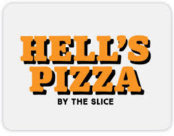
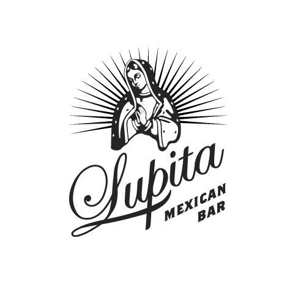
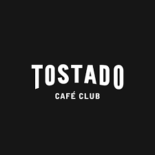
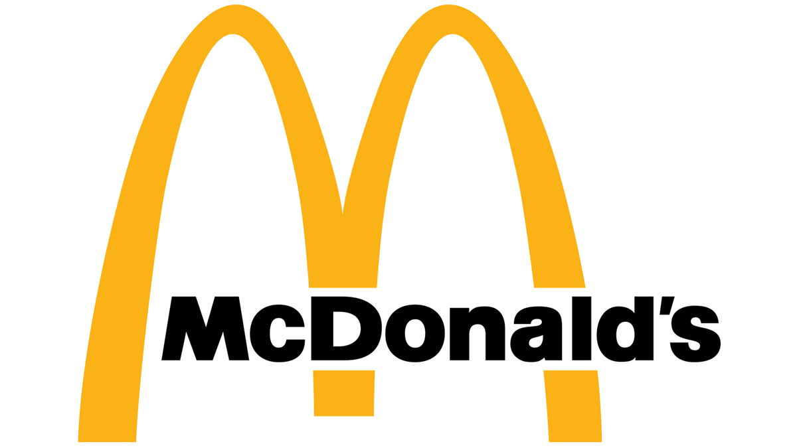
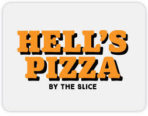
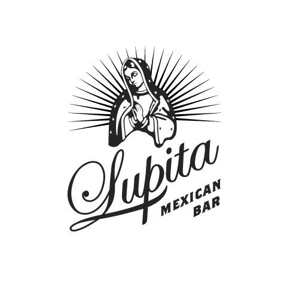
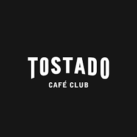
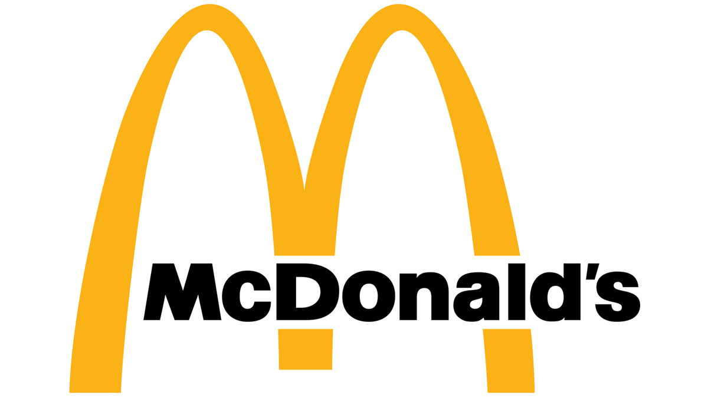

Nuestra historia
La Plaza Doctor Bernardo Houssay está ubicada en el barrio de Recoleta, Ciudad Autónoma de Buenos Aires, frente a la Facultad de Medicina de la UBA. Su nombre rinde homenaje al médico y fisiólogo argentino Bernardo Houssay, Premio Nobel de Medicina en 1947. Antiguamente, en el terreno donde hoy se encuentra la plaza, funcionaba el Hospital de Clínicas, que fue demolido en 1975. A partir de ese momento, el predio fue transformado en espacio público verde, con un diseño pensado para acompañar la intensa actividad universitaria de la zona. Con el tiempo, la plaza se convirtió en un punto de encuentro clave para estudiantes, docentes, vecinos y visitantes, gracias a su cercanía con otras facultades como Odontología, Farmacia y Bioquímica, y Económicas.
Ubicación
Gastronomía
Explorá las diferentes experiencias gastronomicas que te ofrecemos dentro del paseo Houssay.
 






